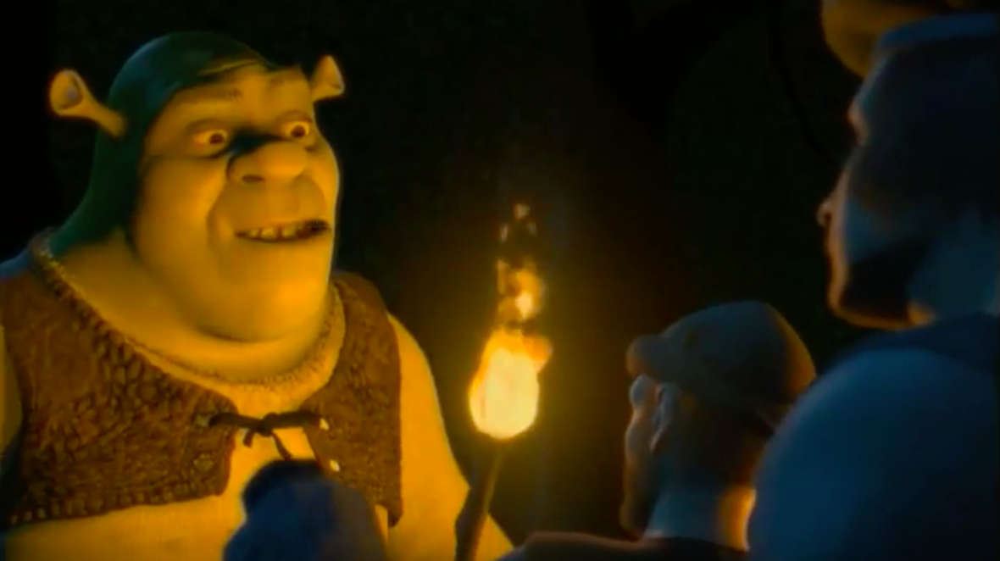

Border Wall
In 2016, President Trump promised the American people that he would invest in border security but he has broken that promise. Shrek realizes the threat to our quiet living posed by Lord Farquaad and another “fairy tail creature eviction.” In the first 100 days of his term, Shrek will invest $500 billion in a wall that will enclose the country completely. It will be constructed from rocks, logs, and other swamp materials.
Gun Control
When ambushed in the forest by Robin Hood and his merry men, Shrek suffered a grievous injury to his posterior. Shrek has witnessed the lethality of crossbows first hand. Since fully automatic rifles are more dangerous than crossbows, he understands just how dangerous guns can be. Shrek will use an executive order to ban the sale and manufacture of all assault weapons in the United States.
Climate Justice
Overfishing, the introduction of invasive species, and the presence of humans is destroying the heart of America: the Everglades, our country’s largest swamp. Shrek has championed protective regulations on America’s swamps as a pivotal issue both on and off the debate stage. He is the only candidate who has pledged his commitment to fill the swamp by 2030.

Agriculture
Government subsidies have turned the breadbasket of America into a corn-basket. This single-crop agricultural system is both economically and ecologically unsustainable. That is why, in an effort to diversify America’s crop yield, Shrek will invest into a massive undertaking--the rise of the onion as the country’s staple crop. “If corn is king, then the onion will be God.”

Ogre Rights
As America’s first ogre president, Shrek will bring a new viewpoint to Washington. He grew up with the immense pressure of prejudice: angry mobs of humans would gather to force him out of their villages, and he was forced to live as an outcast. Shrek understands the struggles that other minority groups face, and he is building a strong coalition out of America’s disenfranchised.
Family Values
Shrek is a loving father of three, and supports greater educational funding, paid family leave, and child care reform. Shrek is a staunch believer that the family unit is not reserved as a man, woman, and their children, but rather it should be extended to any loving union between people, ogres, donkeys and dragons.